Az atlasz
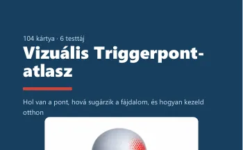
Teljes atlasz · 117 oldalVizuális Triggerpont-atlasz
Mind a 104 kártya egy fájlban, tartalomjegyzékkel és magyar–latin tárgymutatóval.
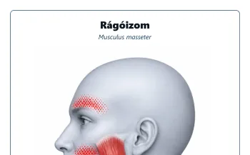
1. testtáj · 1–10. kártyaFej, arc és állkapocs
Csak ennek a testtájnak a kártyái, ha gyorsan akarod megnyitni a telefonodon.
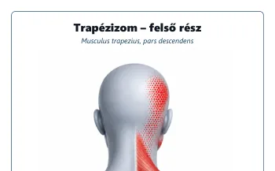
2. testtáj · 11–23. kártyaTarkó és nyak
Csak ennek a testtájnak a kártyái, ha gyorsan akarod megnyitni a telefonodon.
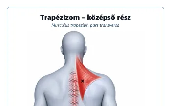
3. testtáj · 24–59. kártyaVállak, felkarok, alkarok és kezek
Csak ennek a testtájnak a kártyái, ha gyorsan akarod megnyitni a telefonodon.
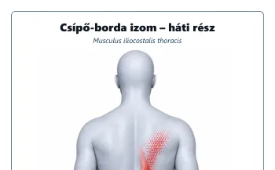
4. testtáj · 60–70. kártyaHát: háti és ágyéki szakasz
Csak ennek a testtájnak a kártyái, ha gyorsan akarod megnyitni a telefonodon.
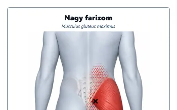
5. testtáj · 71–82. kártyaMedence, csípő és far
Csak ennek a testtájnak a kártyái, ha gyorsan akarod megnyitni a telefonodon.
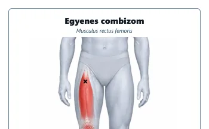
6. testtáj · 83–104. kártyaCombok, térdek, vádlik, bokák és lábfejek
Csak ennek a testtájnak a kártyái, ha gyorsan akarod megnyitni a telefonodon.
A bónuszaid
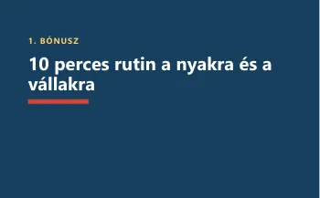
Bónusz 110 perces rutin a nyakra és a vállakra
Esti sorrend nyolc ponttal, minden ponthoz megadott idővel.
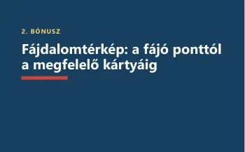
Bónusz 2Fájdalomtérkép: a fájó ponttól a megfelelő kártyáig
Jelöld meg, hol fáj, és rögtön látod, melyik kártyákkal kezdd.
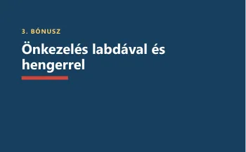
Bónusz 3Önkezelés labdával és hengerrel
25 testhelyzet teniszlabdával, masszázslabdával és hengerrel.
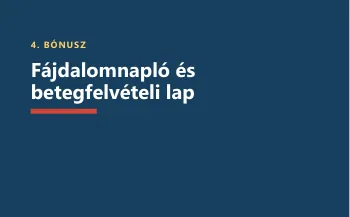
Bónusz 4Fájdalomnapló és betegfelvételi lap
Öthetes napló és kitölthető lap a terapeutának.
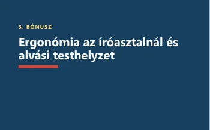
Bónusz 5Ergonómia az íróasztalnál és alvási testhelyzet
Ülés, telefon, emelés, alvás és párna: így tehermentesítsd az izmaidat.
Hol kezdd?
- Töltsd le a teljes atlaszt (vagy csak a fájó testtáj PDF-jét).
- Olvasd el az atlasz 2. oldalát: hogyan használd, és mire figyelj.
- Ha nem tudod, hol kezdd, nyisd meg a Fájdalomtérképet (2. bónusz).
- Este csináld végig a 10 perces rutint a nyakra és a vállakra (1. bónusz).
Csak személyes használatra. Továbbértékesítése és terjesztése tilos.